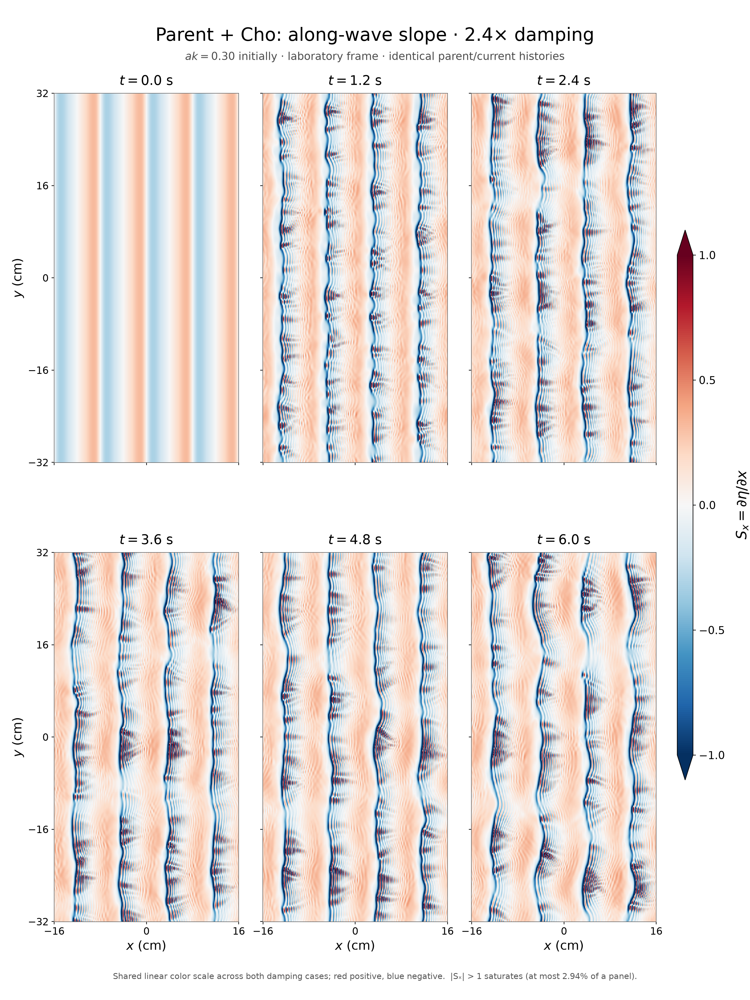
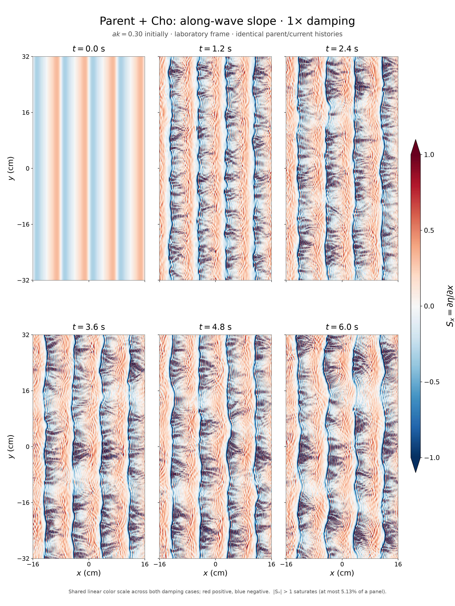
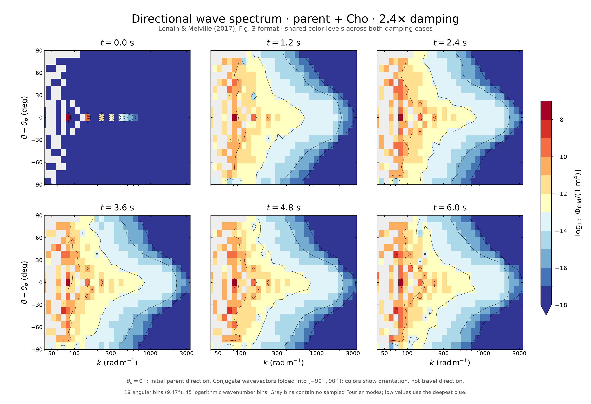
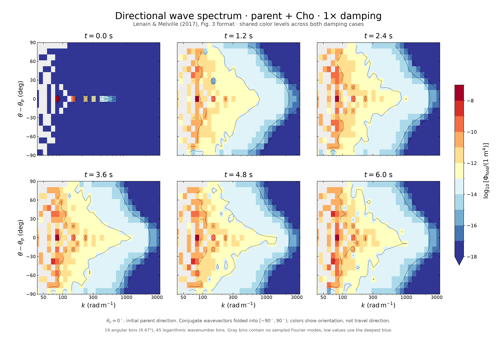
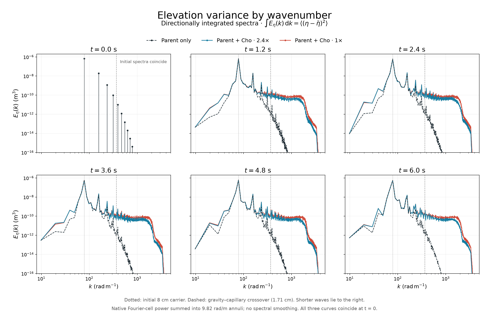

Six snapshots of the parent + Cho surface, comparing damping of 2.4× and 1×: along-wave slope ηx and the distribution of elevation variance across horizontal wavevectors.
The paired simulations share the same parent and current histories. Their nominal initial steepness is ak = 0.3 and carrier wavelength is 8 cm. The snapshots are at 0, 1.2, 2.4, 3.6, 4.8, and 6 seconds.
One common linear color scale: red is positive x-slope and blue is negative x-slope. Both main figures use −1 to +1 to make the smaller-scale structure visible. Values outside that interval use the end colors.
At most 2.94% of the plotted area is saturated in any 2.4× snapshot, and 5.13% in any 1× snapshot. The full-range downloads use a common −7.5 to +7.5 scale and include every value. Slopes are dimensionless.


Following the display in Lenain and Melville (2017), Figure 3, these panels place wavenumber k on a logarithmic horizontal axis and angle θ − θp on the vertical axis. The reference θp = 0 stays fixed at the initial parent-wave direction. Larger wavenumbers represent shorter waves.
The red–yellow–blue filled levels and black contours show log10 Φfold, with one common scale across all times and both damping choices. Gray bins contain no Fourier wavevectors on this finite grid.


A real elevation snapshot has equal power at opposite Fourier wavevectors. Their powers are combined into the 180° orientation interval shown here, preserving total variance. These panels reveal orientation, but cannot distinguish opposite propagation directions or freely propagating disturbances from parent-locked ones; that requires time-dependent phase information.
The radial spectra sum over all wavevector orientations. Each time panel compares the common parent surface with the two parent + Cho surfaces, making the redistribution toward shorter wavelengths easier to inspect.

These figures use existing saved surfaces; no simulation was rerun. Slopes and spectra were evaluated at the native 512 × 1024 resolution in laboratory coordinates. The periodic elevation fields have their spatial mean removed, with no window or field smoothing. For the directional display, Fourier-mode power is summed into 45 logarithmic wavenumber bins and 19 angular bins, then divided by each annular sector's area in wavevector space. The coordinate conversion, Parseval identity, spectral slope moments, radial and folded-spectrum integrals, and agreement with stored mean-square slopes were checked. These numerical checks do not establish the physical validity of every steep local feature.